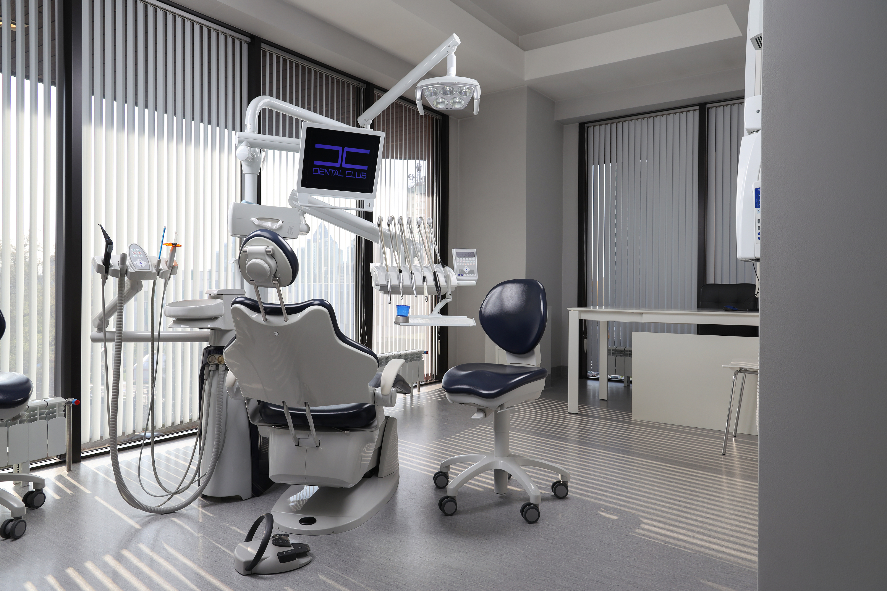
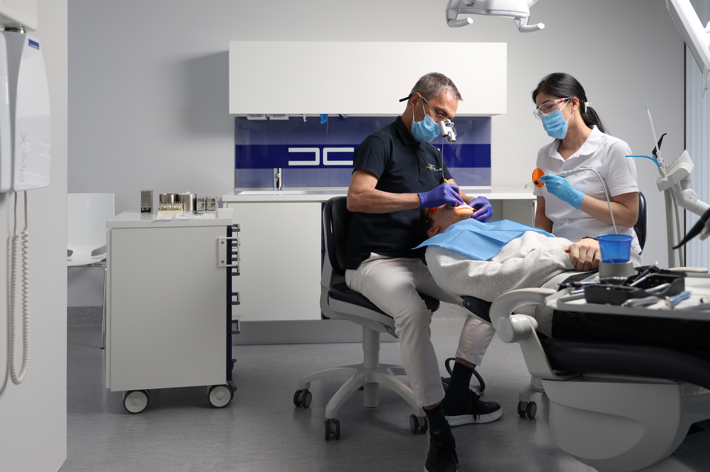
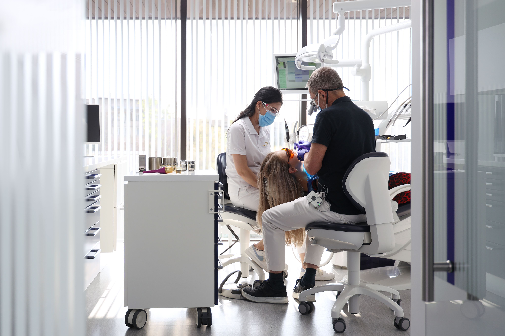
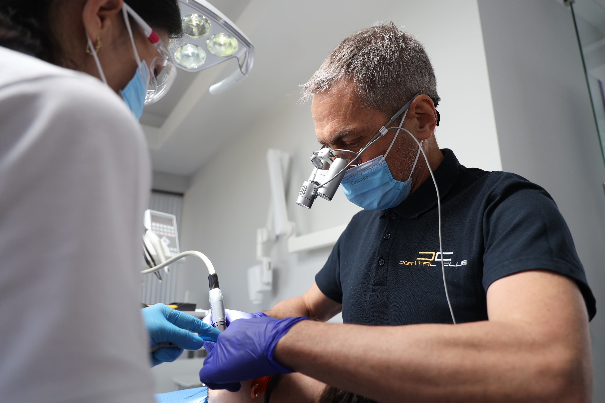
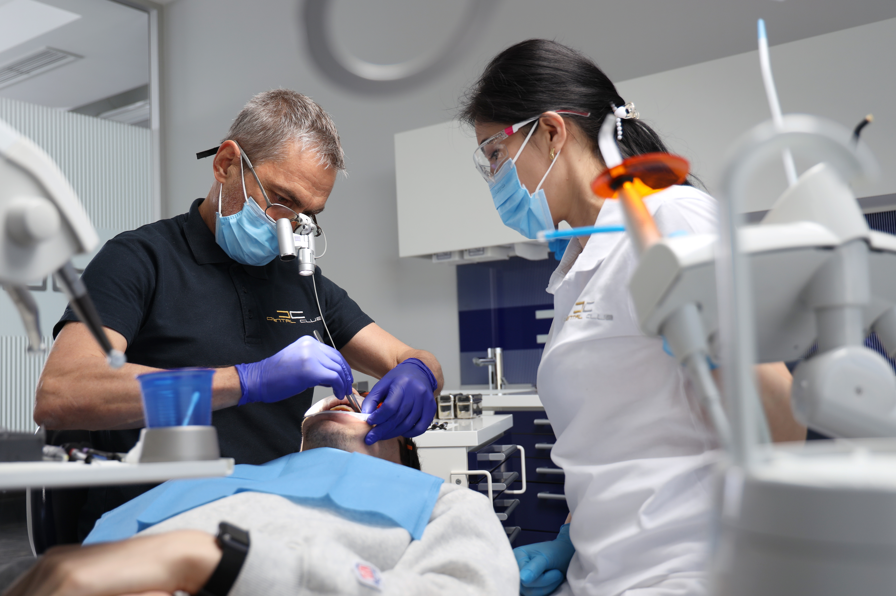

ЦИФРОВОЕ ПРОТЕЗИРОВАНИЕ
Цифровое протезирование зубов – это направление эстетической стоматологии, с использованием цифровых технологий в моделировании и изготовлении ортопедических конструкций.


Согласно вашим требованиям и возможностям подбирается оптимальный вариант ортопедической конструкции. Совместно с нашей лабораторией в Dental Club изготавливаются: коронки на имплантантах, одиночные коронки, виниры, вкладки, накладки, временные и постоянные несъёмные протезы по системе Всё на 4-х и Всё на 6-ти и многое другое.


В практике Dental Club мы используем современные материалы - цирконий, IPS.E-max, керамические виниры (люминиры), в том числе на рефракторе. За счёт использования передовых технологий толщина конструкций не превышает 5 микрон, что позволяет минимально обтачивать зубы, тем самым значительно продлевая срок их службы. Такие непрямые реставрации с точки зрения эстетики никак не отличаются от естественных зубов и прослужат многие годы.
Точность при цифровом изготовлении ортопедических конструкций позволяет уже во второе посещение зафиксировать коронку, минуя этап примерки.
Отличительной особенностью ортопедических конструкций, изготовленных современными цифровыми методами, является прочность и устойчивость к изменению цвета. Высокая стоимость таких реставраций обоснована их надёжностью и долговечностью.
Этапы
- 1. Подготовка зуба или установленного имплантата к протезированию
- 2. Снятие слепка
- 3. Изготовление временной конструкции
- 4. Установка финальной конструкции.
